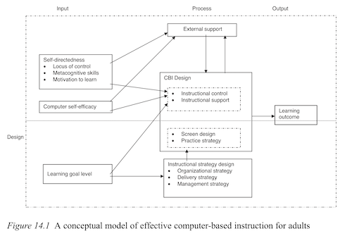

Research has shown that...
...computer-based instruction (CBI) is great!
so cheap
so accessible
much effective
So, how are organizations using CBI?
bla bla bla bla bla bla bla bla
Yeah.
No one cares,
not organizations, not academics.
* this is all from Knowles et al. Chapter 14!
But what if there's a way to design CBI
that's evidence-based and fun?
What if there are tools, available for free, that can help you
create lessons into interactive games, forever?*
* until the world burns in 2050

And it's interesting.
So bear with me through this trial run.
In short, CBI = input + process + output.
As you can tell, this is very much developed using systems approach.
Very S-OP..
There are many development tools that are free to use.
yeah whatev
So, what's the catch? Why isn't everyone making CBI?
Well, the catch is that tech stuffs are scary
– especially things that look like hackers use.
teacher's coming
That's why I made this badly-drawn interactive comic.
In this comic on on CBI,
I'll talk to you about components the CBI theory...
...and help you remember it TODAY.
Also, throughout this comic,
you can test yourself on what you've learned,
at spaced-out intervals.
Just a little throwback on using flashcards.
Like so:
THE COMPONENTS of
CBI THEORY
Starting backwards, the only component of Outcome is Learning Outcome.
Learning outcome is basically achieving the learning goal.
* also I didn't draw most of
these illustrations, but, eh.
Next part is the Process unit, which includes Instructional Strategy Design,
CBI Design, and External Support.
so...
many...
parts...
Each of these also have smaller pieces that we can talk about.
Instructional strategy design has 3 types: organizational, deliver, and management.
hi! sorry, what's are we talking about again?
haha. it's the Process unit.
Organizational delivery is sequencing of the content.
...this happens... then I was like...
Delivery strategies = determining the appropriate media of instruction and grouping strategies.
cool?
cool
Finally, instructional manangement strategy = putting all the logistics together!
...where did I leave my computer...
After strategy design, the next piece of the Process Unit
...is CBI Design.
Basically, this is where we consider our learners' individual differences!
Do we really have to?
To understand this, think about training your muscles.
You’ll gain nothing with a weight that’s too easy...
...nor one that’s too hard.
The same’s true of training your learners' brain.
You need desirable difficulty: the sweet spot of just-hard-enough.
comfort
discomfort
too easy
just right
too hard
CBI Design has four components: instructional control,
instructional support, screen design, and practice strategy.
Instructional control can be program-controlled, learner-controlled, or adaptive-controlled...
Instructional support enhances the understanding of the content by giving examples, hints, feedback, and coaching.
and this is my private tutor
???
they're TRAINERS
we're not friends anymore
Feedback can be motivating to learners
(but please be gentle)
Screen Design = displaying information at a consistent location
or with relevant graphical information.
(If your screen is confusing, learners will be frustrated like our friend square here.)
The last component of CBI Design is Practice Strategy!
Practice Strategy depends on the difficulty of the content
and individual learner characteristics.
Finally, in the Process unit we have External Support!
Basically support your learners in creating the best learning environment!
Here's the model graph again as a reminder of how these pieces come together!
And speaking of learning,
let's do some active recall on what we just learnt:
Finally, the Input unit of the CBI Theory!
It includes learning goal level, self-directedness, and computer self-efficacy.
Learning Goal Level is defined as the activities or performance required in learning domains
that result in the desired outcome of learning (your sense of accomplishment flies up).
Next, Self-Directedness = an approach where learners assume personal responsibility
and control of their own learning.
Some examples are metacognitive skills, competence, locus of control, and obviously motivation.
But what do we know about motivation and engagement in activities?
Here’s a playable simulation of the motivation curve.
Change the rate of motivation decrease. What happens to the curve?
As you can see, the less the decrease, the flatter the curve –
that is, the longer someone is willing to do things.
And more importantly,
motivation can increase if the learning is personally...
MEANINGFUL
Finally, it is Computer Self-Efficacy, aka
Do you believe you can successfully engage in CBI?
Let's do a quick revision,
then when you’re ready, flip the card over ↓
And that is all the components of the CBI theory!
Good job for making it this far :)
There are more to this, but I am
lazy
time-efficient, so this is where the theory ends.
Question:
what’s the point of this interactive comic?
CBI
Well, to force you to make your own CBI. Just kidding! In order to find out
...continue to the next section.
ALL ABOUT YOU!
Personally, here's how I've learnt best:
First, I try (emphasis on try) to do something.
play the ukulele
learn a language
make a web game
Inevitably, I'll get stuck.
In that moment, I'll look up what I need,
and learn something.
how do you play F#?
what's "attraper" mean?
why is javascript $*$^^#%
And so on.
That, is how I ended up making this interactive comic.
I believe the best learning is in service of doing something you care about.
That's why, in the final part of this interactive comic,
you're going to make your own cards!
And those cards will be about...
YOU
Think about what topic you want your syllabus to be for this course,
and answer four questions:
WHAT?
WHY?
HOW?
WHEN?
You'll answer these questions by making flashcards!
So, here's the front of our first flashcard, our first question:
For example, you want to teach...
a new language
doodling
computer programming
how to remember names
how to teach (very meta)
all the pokémon
Now, you write your answer on the back:
(note: you can scroll back here & change your answer later)
However, to develop a full syllabus,
it should probably be something you are passionate about.
So our next question is:
That may be too philosophical, so here's some
concrete examples of a why behind a what:WHAT: DEI issues
WHY: cause it's important
WHAT: data analysis
WHY: to make money so you can eat
WHAT: conflict resolution
WHY: to hang out with Lan at the ICCCR!
So... what's your why?
You now have your what and why... but we still need to pick a how!
That is, what activities/resources do you want to use?
Our next card asks:
HOW?
Just one card left!
Now: many of us might procrastinate...
however, creating your syllabus a day before is hard.
Why? Because it requires many different components.
So you can start brainstorming using this tool today and not leave it to the day of.
did you start?
I'll do it tomorrow!
two weeks before
I'll do it tomorrow!
it's due tomorrow
I'll do it tomorrow!
...so craft yourself a plan.
So, my question is: When do you want to start?
For example, you could think of ideas...
after you wake up
on your commute
before sleeping
Break the assignment into smaller chunks and spread it out.
(No judgment if you thrive under pressure and sleepless nights)
Now, let's fill out that final flashcard:
Et voilà, here's all four of your flashcards, all about you!
So,
your gift for completing this is
MY JOY
...and one of life's greatest loves:
a lifelong love of andrologo...something
Also, this interactive comic is
PUBLIC DOMAIN
meaning you can freely use this thing for educational, personal, or even commercial purposes.
You already have my permission!
(Download the code)
Intro
·
CBI Components
·
All About You!
·
Credits
try to recall ↑
then flip ↻
(cards left: [N])
did you remember this?
nah, try again
yup, onwards!
done for now! keep scrolling
↓
that's all, folks!
↓
motivation →
time →
decrease:
sweet spot:
timing of recall:
timing of recalls:
auto-optimize!
Q:
type your answer here
or pick one of these suggestions:
Anything interesting!
Org Culture
Org Change
Coding
(other)
For people I love
For my own sake
For curiosity's sake
(other)
Lit Review
Develop Learning Goals
Tiny Cards
(other)
Two weeks prior
A week prior
Tomorrow!
(other)
DOWNLOAD ALL CARDS
DOWNLOADING...
DONE! Check your Downloads folder.
so we are going to learn about...
CBI THEORY
CBI = ____ + ____ + ____
input + process + output
3 advantages to using CBI are...
...affordable, accessible, and effective
CBI stands for...
Computer-Based Instruction!
The three parts to the Input unit are...
...learning goal level, self-directedness, and computer self-efficacy!
Instructional strategy design consists of...
determining, sequencing, presenting, and delivering content!
The Motivation Curve looks like...
(note: it decreases quickly, then slowly - "0 motivation")
The three parts to the Process unit are...
...instructional strategy design, CBI design, and external support!